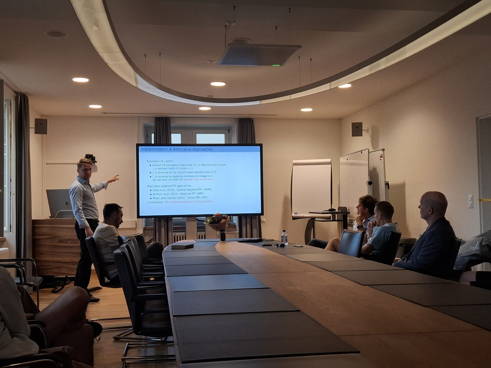

About
Macro researcher with six years at the Swiss National Bank building the pipelines, models and views behind the Bank's inflation and GDP forecasts: scraping news and alternative data, turning it into signals that run live in production, building option-implied distributions around policy events, and defending the resulting view to people who have to act on it. Every forecast is evaluated out of sample in real time. PhD in Finance (summa cum laude, UZH; visiting at Chicago Booth), MSc Statistics (ETH Zurich), four papers on forecasting, factor-model inference and news-based macro signals.

Research
- Measuring Economic Outlook in the News R&R, International Journal of Forecasting
- The Hedged Random Forest R&R, Journal of Financial Econometrics
- Forecasting Inflation With the Hedged Random Forest Empirical Economics (2026)
- Improved Inference in Financial Factor Models International Review of Economics and Finance (2023)
Contact
elliot.beck@hotmail.com · github.com/elliotbeck · linkedin.com/in/elliot-beck